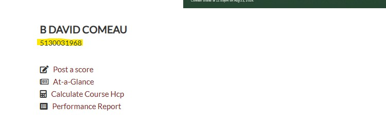

Welcome to Nassau Golf for Derrick Golf & Winter Club — a scoring and betting companion for your group. This guide covers everything from setup to settling up.
Nassau Golf takes your privacy seriously. Here is a plain-English explanation of exactly what data the app collects, where it goes, and who can see it.
All round data, player names, handicaps, betting results, and Golf Canada member IDs are stored exclusively in your iPhone’s browser storage (localStorage). This data never leaves your device and is never sent to any server, cloud service, or third party. There is no Nassau Golf database or backend — the app is a single file that runs entirely on your phone.
When you enter your Golf Canada credentials (member ID and password), they are used for one purpose only: fetching your current handicap index directly from Golf Canada’s API. Your credentials are:
Once saved, your handicap refreshes automatically every 3 hours in the background — your credentials are read locally each time and sent directly to Golf Canada. No one else ever sees them.
Your Golf Canada credentials persist in localStorage indefinitely — they survive app updates, closing the app, and restarting your phone. They are only lost if you:
If you restore a new iPhone from an iCloud backup, your credentials and all app data come with it.
The app fetches live weather from the Derrick GWC weather station via a secure Cloudflare Worker proxy. No personal information is sent with this request — it is a read-only call to a weather instrument.
If you don’t have a Golf Canada account or have forgotten your credentials, contact Trevor Goplin, Golf Professional at Derrick Golf & Winter Club. He can look up your member ID and assist with account setup at golfcanada.ca.
Nassau Golf is a web app that installs to your Home Screen like a regular app and works offline once loaded.
How to install on iPhone:
Nassau Golf updates automatically — when a new version is published and you open the app with an internet connection, it downloads the update in the background and applies it the next time you open the app.
If you think you might be on an old version (the version number at the bottom of the Setup screen is the quickest check), here are three ways to get the latest, in order of ease:
bdcomeau.github.io, swipe left and tap Delete. Then force-close the app and reopen. This clears the cached old version so the fresh one loads. This does NOT delete your saved players or round history.As you type each player's name, the match selection buttons below update live to show the actual names instead of "P1," "P2" etc. — so you can see exactly who is matched against whom before starting.
Most groups play with the same people every time, so you can save your regulars as Favorites and have them fill in automatically each round.
From then on, your favorites pre-fill the player rows automatically — every time you start a New Round, and whenever you open the app fresh. "Me" lands in slot 1, then the other favorites follow, each on their saved default tee deck with the handicap already adjusted.
If a player has a Golf Canada Member ID, you can pull their current handicap index automatically instead of typing it. Each player row has two stacked buttons on the right: the Golf Canada logo (lookup) on top, and the 💾 save disk below.
Tap the Golf Canada logo button. The handicap fills in automatically, and the player is saved to your contacts at the same time.
To automatically fetch a player's current handicap index from Golf Canada, you need two things:
If a player doesn't have their credentials or isn't sure, the easiest way to get set up is to contact your club's golf professional. At Derrick Golf & Winter Club, contact Trevor Goplin — he can look up member IDs and assist with Golf Canada account registration.
Alternatively, members can:
On the Golf Canada website, do a Handicap Lookup for the golfer. Their 10-digit Golf Canada Member Number appears just under their name, as highlighted below:

Enter that number in the player's Golf Canada Member Number field on the setup screen, then tap the Golf Canada logo button to fetch the current handicap.
Once a player has a Golf Canada Member Number saved, the app keeps their handicap current for you. Whenever players are loaded — favorites filling in on a new round, opening the app, or picking a saved player — the app quietly refreshes their handicap in the background.
Each golfer can select which tee deck they are playing from the Tee dropdown on their player row — DECK1, DECK1/2, DECK2, DECK2/3, DECK3, DECK3/4, or DECK4, listed longest to shortest with the combined decks slotted between. Because a handicap changes with the tees played, the app adjusts the fetched Golf Canada index for the chosen deck and rounds it to a whole number, which becomes that player's playing handicap for all match calculations.
| Tee Deck | Playing handicap (from the fetched Golf Canada index) |
|---|---|
| DECK1 | round( index × 121 ÷ 113 + 0.9 ) |
| DECK1/2 | round( index × 120 ÷ 113 + 0.2 ) |
| DECK2 | round( index × 119 ÷ 113 − 0.4 ) |
| DECK2/3 | round( index × 118 ÷ 113 − 1.8 ) |
| DECK3 | round( index × 117 ÷ 113 − 2.9 ) |
| DECK3/4 | round( index × 109 ÷ 113 − 4.9 ) |
| DECK4 | round( index × 109 ÷ 113 − 5.9 ) |
For shotgun-start tournaments, use the Starting Hole selector to choose which hole your group tees off on (1–18). All scoring, match calculations, and hole badges throughout the app adjust automatically.
Below the player list is a "Scorecard only" toggle. Switch it on when you just want to keep score — no Nassau or 6-Point betting. When it's on, the betting-game sections disappear from setup and you can start the round without choosing any games.
In a scorecard-only round, once all 18 holes are scored, a "🤔 What if you'd played Nassau?" banner appears below the master scorecard. Tap it to open a fun calculator that shows what each possible matchup would have paid, based on the day's actual scores — using the full Nassau engine (Front 9 / Back 9 / Total 18 with automatic presses).
Set up any combination of games (skip this entirely if "Scorecard only" is on). At least one game (Nassau or 6-Point) is required to start a betting round.
2v2 Nassau Games — Pair players into two-person teams. The bet amount applies separately to Front 9, Back 9, and Total 18. Multiple 2v2 games can run at once.
1v1 Nassau Games — Head-to-head match between any two players, with separate Front 9 / Back 9 / Total 18 bets.
6-Point Game — Choose any three players. Set the dollar value per point (25¢ to $10). Can be played with or without Nassau games.
🐍 Snake 3-Putt Game — Optional money game. Enable it in the purple Snake card on the Setup screen. Set the bet amount per player ($1–$20) and select which players are participating (others are invisible to the game). Settlements happen every 3 holes (holes 3, 6, 9, 12, 15, 18); the snake resets after each one. See Section 11 for full details.
The ⚙️ Score Entry Options card (between Round Type and Snake) contains:
Set Number of Players to 1 for a solo round. Scorecard-only mode is forced automatically — no matches, betting, or Snake. The round saves to History the same as any other.
The "↺ Reset Setup" button (below Start Round) clears all entered names, handicaps, Golf Canada IDs, and selected games, and resets to 2 players. A confirmation appears first. Your saved player contacts are not affected.
Tap Start Round. The app jumps straight to the Scorecard screen, ready for the first hole.
↑ Back to topThe Scorecard screen shows one hole at a time, with a card for each player. It's where you'll spend most of the round.
Each player card shows the player's name and a live combined money total covering all active games — Nassau (1v1 and 2v2) and 6-Point — in real time (green = winning, red = losing, gold = even). The handicap index and ✏️ edit button sit on the right side of the header beside the money amount, away from the score entry area — tap it to edit the handicap mid-round. Once a score is entered on the current hole, the card gains a gold border as a quick confirmation.
Below the player cards, the master scorecard shows all players' gross scores in the authentic Derrick Golf & Winter Club card style — charcoal hole column, olive par row, and the Derrick logo in the corner. Stroke holes are pre-marked with red circles:
| Mark | Meaning |
|---|---|
| Thin red circle | Player gets 1 shot on that hole |
| Double red circle | Player gets 2 shots on that hole |
Once a gross score is entered, it appears inside the red circle on stroke holes. The card also shows OUT, IN, TOT, and NET rows. NET is each player's gross total minus their full handicap index.
When you start a round, the start time is recorded. The moment the 18th hole's last score is entered, the finish time is stamped and a pace-of-play line appears — e.g. "⏱️ Round started 12:36 PM · Pace of play 4 hours 10 minutes." Editing a score back to incomplete clears the finish time; it re-stamps when you finish again.
A weather strip appears on the Scorecard screen, just below the Front 9 / Back 9 tabs, showing live conditions from a Davis weather station via WeatherLink — for example: "🌡️ 11°C · 💨 calm · 💧 93% · 🌧️ 0 mm today." It refreshes automatically every couple of minutes.
The conditions at the start and finish of the round are saved with it. In Round History, a "🌦️ Conditions" card shows the Start and Finish readings.
Once all 18 holes are scored, three money rows appear at the bottom of the master scorecard (each player's amount in their own column, green for up, red for down): Nassau $, 6-Point $ (only if there are 6-Point games), and Total $ Today in bold. These don't appear in scorecard-only rounds.
↑ Back to topEach player card features a drum-roll style score selector. Tapping the centre box sets par. The ◀ and ▶ arrows adjust the score one stroke at a time, and you can also swipe up or down on the centre box. The recorded score highlights brighter on the side panels so you can confirm at a glance.
Eagle and worse-than-triple scores are still reachable using the arrow buttons — the side panels just show the most common outcomes for speed.
↑ Back to topTap the 💰 Nassau icon at the bottom to see live match scorecards for every Nassau game.
Each Nassau match is shown as a Derrick-style card with the first three columns (Hole, HCP, Par), then each player's gross scores, then running columns for every bet: Nassau F9, Nassau B9, Nassau 18 (shown vertically with a light tint to set them apart), and each press (P1, P2, …).
A press is an extra bet worth DOUBLE the Nassau amount. A new press starts automatically the moment the parent game first reaches 2 up or 2 down: the trigger hole shows "P" in a new column, and the press begins counting on the very next hole.
Once all 18 holes are scored, a gold banner shows the final match result, e.g. "Greg Hines wins $38" or "Bruce & Greg win $24," or "All square — $0." The amount combines every settled bet and press (and the International result, if one was called). While the round is in progress no running total is shown — nobody has won until the 18th hole is complete, so check the WINS row and per-game columns to see where each game stands. (If the International has been called, the banner shows its status instead.)
The WINS row below shows each bet column's settlement from the first listed side's (Player 1 / Side A) perspective: a win is a positive amount, a loss a red negative amount, a halved bet $0, and a bet folded into the International as 🌍.
↑ Back to topThe International — "The Big I" — is an optional side bet available only after the 17th hole of an 18-hole Nassau is complete. The trailing side may ask for it; the leading side accepts or declines. It's agreed verbally at the tee, then the scorekeeper engages it in the app.
The side that is UP in total money after 17 holes are the Leaders; the other side are the Trailers. (Based on the overall money standing, so it's always clear-cut.)
Each game and press leg is tested on its OWN standing to decide whether it's "protected" (left out of the Big I and settled normally on the 18th) or pulled into the pot. There are two rules.
Front-nine pieces — the Nassau Front 9, and the front leg (through hole 9) of any press started on the front nine — go into the pot whenever they are not even. If anyone is ahead, even by a single hole, the piece goes in the pot. It's protected only when dead even. The band cushion does not apply to these.
Everything else — the Back 9, Total 18, back-nine presses, and the back leg (through hole 17) of a front-nine press — is protected when its standing is INSIDE the band, and goes into the pot only when outside it. The bands are:
A front-nine press is judged as two independent halves: the front half (through hole 9) follows the front-nine rule (in the pot unless even), and the back half (through hole 17) follows the band rule. For example, a press that's +1 after nine holes but even after 17 has its front half in the pot (it isn't even) while its back half is protected.
Every piece pulled out of normal settlement is consolidated into one pot. The pot is the NET difference between the two sides, measured from the Leaders' side: a piece the Leaders are ahead in (or have won) adds its stake to the pot, and a piece the Trailers are ahead in (or have won) subtracts its stake. The pot is the resulting net amount.
Example: if the non-protected pieces tallied $20 for the Leaders and $2 for the Trailers, the pot would be the $18 difference. Those pieces no longer settle on their own — their value lives entirely in the pot.
The 18th hole decides the pot, based on the Leaders' points on the hole (in a 2v2 the hole is the usual high-low, worth up to two points; in a 1v1 it's a single point). Protected games settle normally on top in every case:
A three-player game where 6 points are distributed each hole based on net scores, with handicaps zeroed off the lowest-handicap player among the three.
| Result on the hole | Points awarded |
|---|---|
| One player has the outright lowest net score | 4 to that player, 0 to the other two |
| Two players tie for lowest net | 3 each to the tied players, 0 to the third |
| All three players tie | 2 points each |
Every hole distributes exactly 6 points. Across 18 holes the three players' totals always add up to 108.
Tap the 6️⃣ icon at the bottom to see the 6-Point card. It shows the players' gross scores (with red stroke circles), their points columns, and a TOTAL PTS row. Below that is the money standing per player: while the round is in progress this is a "CURRENT $" row — each player's winnings based on the points so far, calculated the same way as the final settlement. Once all 18 holes are scored it becomes the final "$ WON/LOST" row.
↑ Back to topBirdie Juice is a fun running tally of birdies (and better) made during the round. Tap the 🐦🥃 icon to see who has earned what. A badge on the icon shows the current count. It's a celebratory side-tracker — it doesn't affect any money settlement.
↑ Back to topTap the 📜 History icon to see all saved rounds. Tap any round for a detailed read-only view showing the Final Totals, a "🌦️ Conditions" card, the full scorecard, Nassau match cards, 6-Point results, and (if played) the Snake 3-Putt Game hole-by-hole log at the bottom. (Money and game cards are skipped for scorecard-only rounds.)
Two share buttons sit in the header:
At the top of the History screen, a Backup & Restore card provides two buttons:
From the History list, tap the 🗑️ icon next to a round and confirm to permanently delete it.
↑ Back to topTap 🔄 New Round in the bottom nav. The confirmation dialog adapts to the situation:
Blocked on hole 18: if you tap New Round while on hole 18 with scores still missing, the app blocks you and names who still needs to score — finish the hole first.
Emergency restore: even after confirming a New Round, the previous round state is saved as an emergency backup for 24 hours. If you acted by accident, a yellow ⚠️ Accidental New Round? banner appears on the Setup and History screens with a ↩ Restore Round button.
An optional money game that runs alongside (or instead of) Nassau and 6-Point. The snake settles every 3 holes — whoever held it at holes 3, 6, 9, 12, 15, and 18 pays each other participant. The snake resets after each settlement, so there are 6 independent stretches per round.
In the purple 🐍 Snake 3-Putt Game card on the Setup screen:
A compact bar appears above the player cards on each hole. It shows a dropdown to record who 3-putted on that hole, and the current stretch holder on the right (e.g. "H4-6: Bruce"). After each settlement hole the stretch holder resets to "—" for the next stretch.
At holes 3, 6, 9, 12, 15, and 18, whoever holds the snake at that moment pays each other participant the bet amount. With 5 players at $5: the holder pays $20 total ($5 × 4 others). If nobody held the snake in a stretch, that settlement is skipped.
Tap the 🐍 Snake tab in the bottom nav (visible when Snake is enabled) to see:
Snake money is included in the live $ beside each player name on the scorecard, the 🐍 Snake $ row at the bottom of the master scorecard, and the Total $ Today total.
Each saved player can have a Typical Score set in Manage Favorites & Players. Options are Par, Bogey, or Double — all relative to par on each hole.
When a player has no score entered for a hole, their score wheel automatically centres on their typical score. For example, a player set to Bogey will see 5 in the centre on a par 4, with Par to the left and Double/Triple to the right. Tap to confirm or spin to change.
The default for all players is Par.
Tap ⚙️ Round, Match & Player Settings on the score entry screen to access mid-round adjustments. All sections are collapsible — tap any header to expand it.
Always visible at the top. Toggle automatic hole progression on or off mid-round without restarting. When ON, the app moves to the next hole automatically once all players have a score entered.
If you selected the wrong starting hole, fix it here. All scores already entered shift to the correct holes automatically and all matches recalculate. Have no fear!! Works even if scores wrap past hole 18 back to hole 1.
Each player row shows their current handicap index (display-only) and a Tee Deck selector. Select a different deck and the handicap recalculates automatically. All Nassau and 6-Point matches update instantly.
The handicap field is display-only and cannot be edited directly — change it by selecting a new Tee Deck.
Within the Players section you can also add or remove players mid-round:
Tap a pairing to add or remove it from the active round. Adding a match starts it from the current hole.
Tap a matchup to add or remove it. Removing a match keeps scores but drops it from Nassau totals.
Pick any 3 players to add or remove the 6-Point game. Player names reflect the actual golfers in the round.
Turn the Snake game on or off, adjust the bet amount, and manage which players participate mid-round.
Tap ⚙️ Matches (or ⚙️ Players in a scorecard-only round) at the top of the Scorecard screen to open the manage screen. Remove them there; in a betting round this also drops them from any active Nassau and 6-Point games. Their scorecard column remains (with scores already entered) but they'll no longer block the group from advancing holes or settling bets.
Weather requires an active internet connection. The station data feeds automatically — if the strip shows unavailable, check your connection and try again. The rest of the app works fully offline.
Check the 10-digit Golf Canada Member ID and that your Golf Canada login is correct. You can always type a handicap in manually instead.
↑ Back to topNassau Golf · Derrick GWC · v15.9